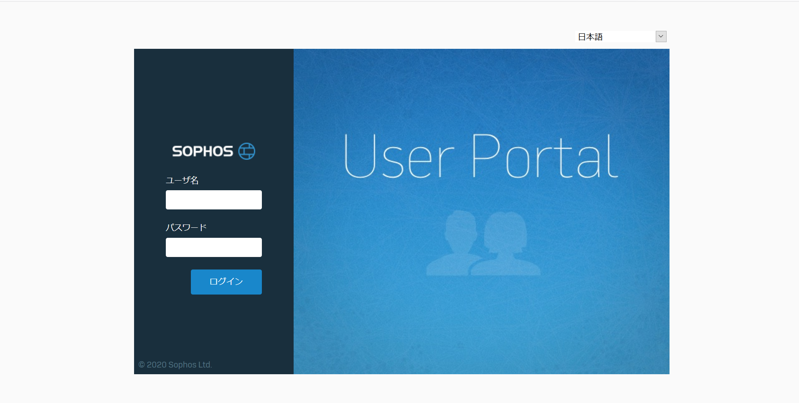
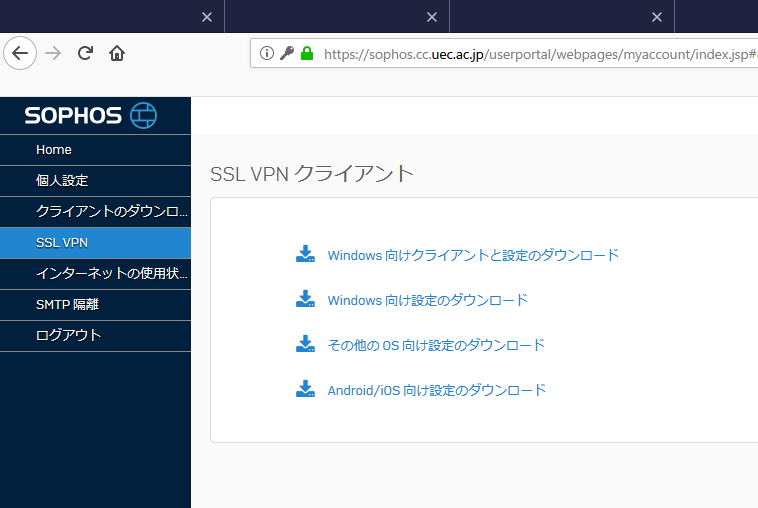
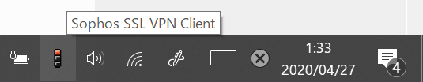
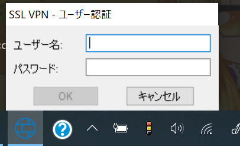
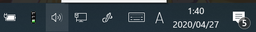
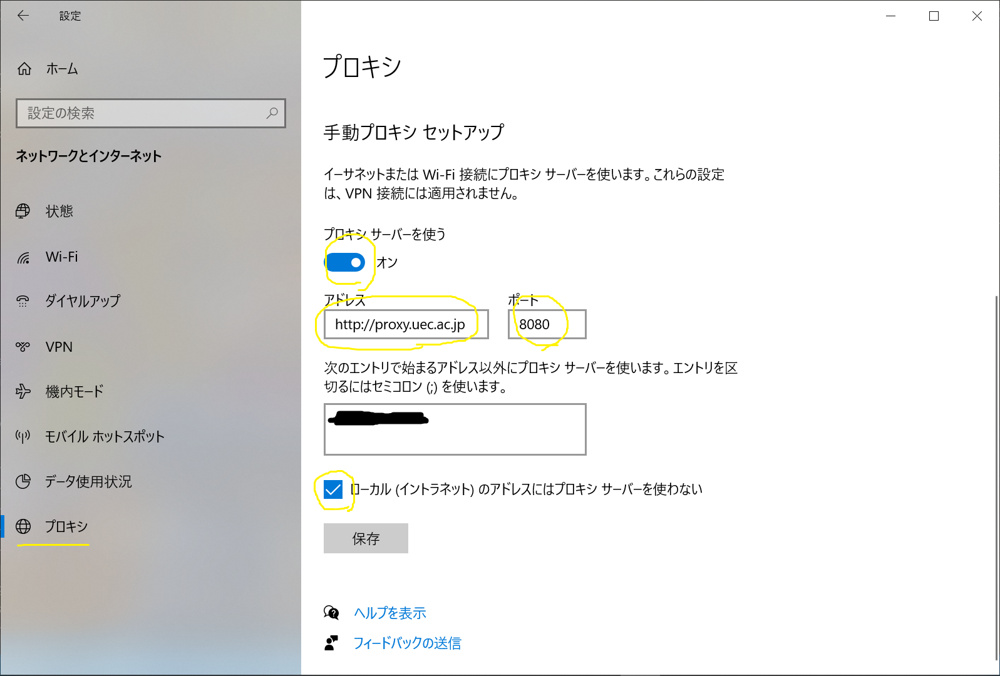

Lunatic電通生もっちゃんの部屋
STEP 5-2 SSL VPN の設定・使用方法
まず、学外から設定している人は、まだPowershellが動いている事を確認してください。
Firefoxでhttps://sophos.cc.uec.ac.jp/userportal/webpages/myaccount/login.jspにアクセスしてください。
画面のページが開いたら、「ユーザー名」にUECアカウント、「パスワード」にパスワードを入力してください。（これ以降の内容は個人に紐付けられているので、公開しないでください）
引用：情報基盤センターHP左の「SSL VPN」をクリック、右の「Windows 向けクライアントと設定のダウンロード」をクリックして、ファイルを保存してください。そして、実行してください。（セキュリティ画面が出てきたら、「はい」を押してください）
実行したら、すべて英語ですが恐れずに。特にこだわりが無ければ、「Next」か「I agree」、「Install」を押してください。「Finish」がでたら終了です。
これで設定はおしまいです。Powershellを開いていた人は閉じてください。また、Firefoxの設定を戻します。「右上の三 ⇒ オプション ⇒ 一般」を選択し、一番下にある「接続設定」をクリック、「システムのプロキシー設定を使用する」を選んでください。
次に確認方法です。
デスクトップの右下に信号機があると思います。それを、「右クリック」して「接続」を押します。
信号機が黄色信号になって、「ユーザー認証画面」が出てきます。ユーザー名は「UECアカウント」、パスワードは「パスワード」を押して、「OK」を選択してください。
信号が青になれば成功です。しかし、このままだといろいろなサイトが見れません。従って、別途プロキシ設定を行っていきます。
「スタートボタン ⇒ 設定 ⇒ ネットワークとインターネット ⇒ プロキシ 」を選択。「手動プロキシセットアップ」を選択し、以下のように入力しましょう。
- 「プロキシサーバーを使う」を「ON」にする。
- 「アドレス」欄に、
proxy.uec.ac.jpと入力する。 - 「ポート」は
8080と入力してください。 - チェックはつけて置いた方が無難です。
- 「保存」を押す。
最後に、使用方法と注意点です。
学外からアクセスするときは、「信号の接続・切断」と「プロキシ設定のON・OFF」をしましょう。
ただし、大学内で「UECWireless」や「AIA-Wireless」に接続する時は、「プロキシ設定のON・OFF」だけで見られるようになります。
Next -> STEP 6 メールを設定する
※VPNやSSHは必要ありません。